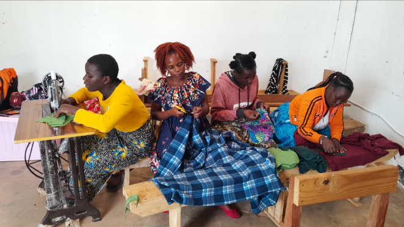
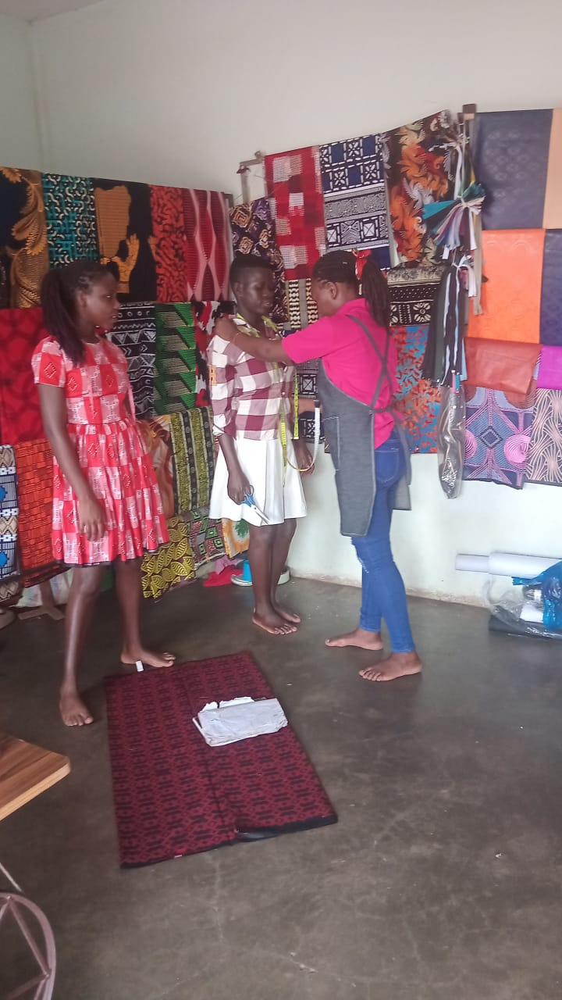
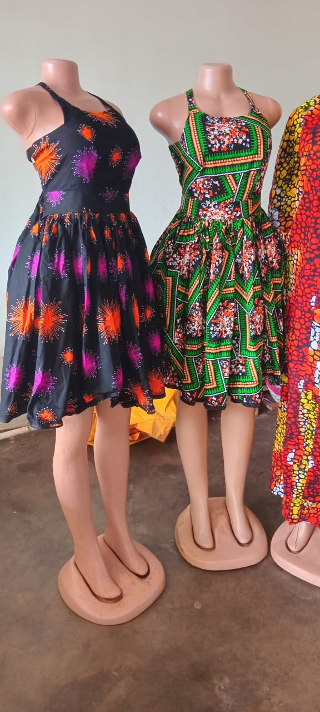
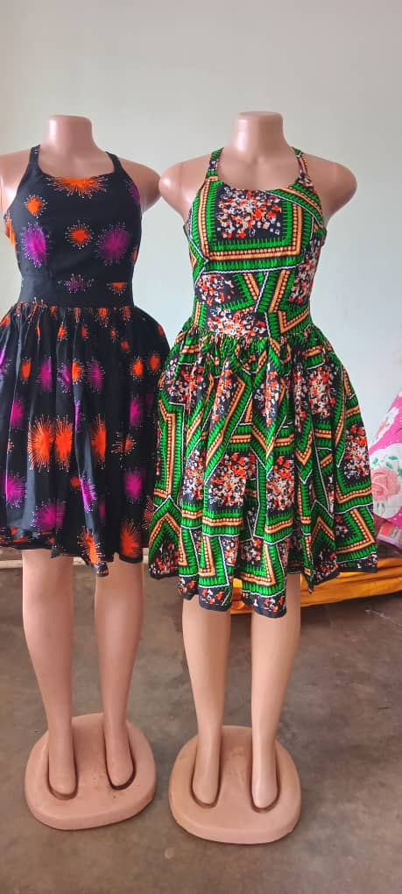
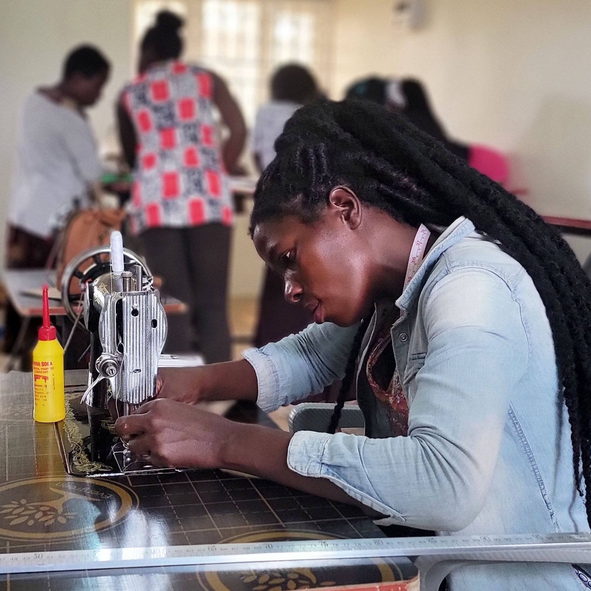
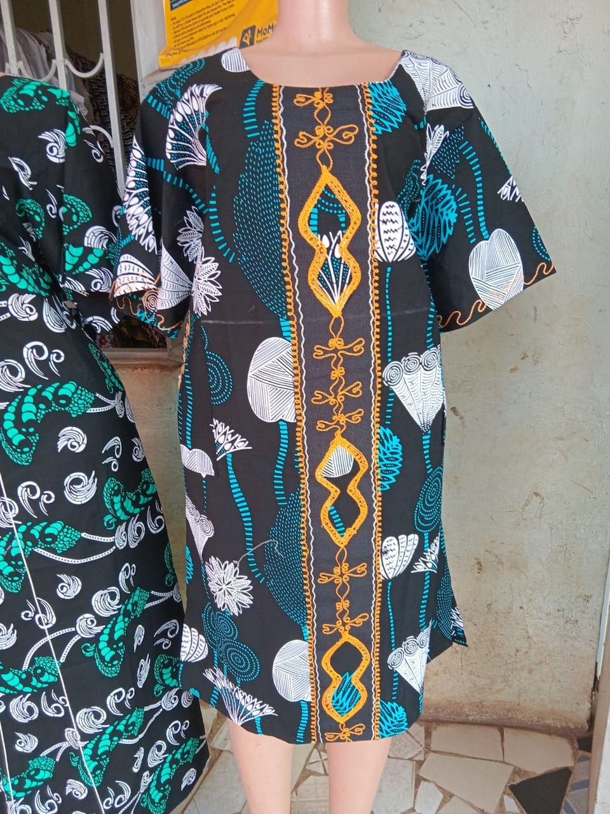
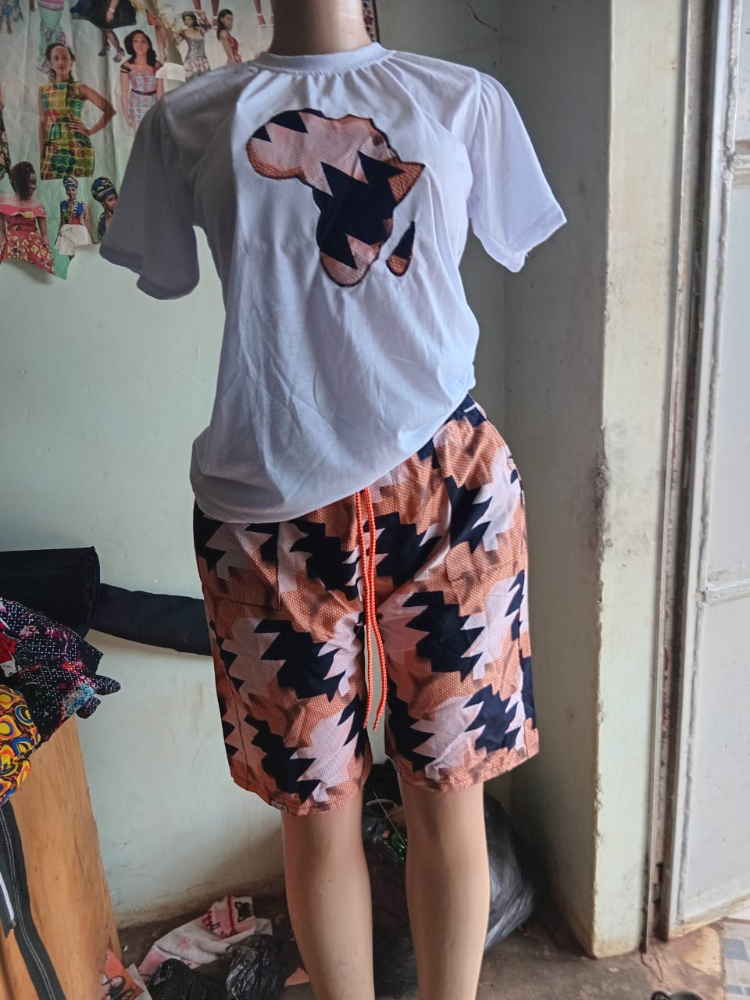
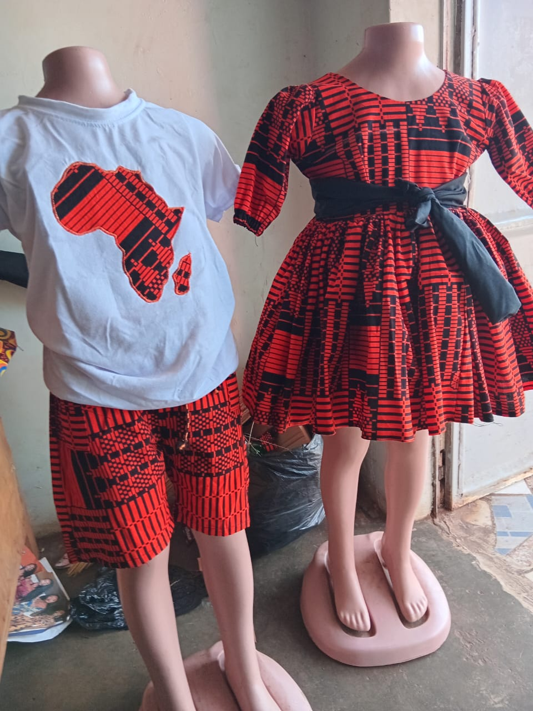
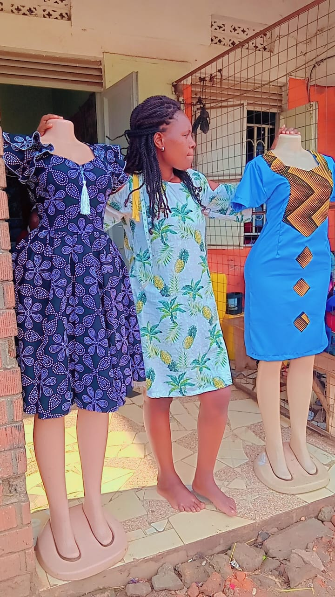

Hands-on learning
Structured training equips learners with usable tailoring and design skills that create immediate pathways to income.

TAILORING • FASHION • DESIGN • EMPOWERMENT
A community-rooted tailoring, fashion and design skill training centre empowering teenage mothers, school dropouts, orphans, people lacking parental support and persons with disabilities in Northern Uganda.

WHY IT MATTERS
Structured training equips learners with usable tailoring and design skills that create immediate pathways to income.
We centre teenage mothers, school dropouts, orphans, and persons with disabilities in a compassionate, practical model.
Each learner gains skills, guidance, and enterprise support that can transform survival into sustainable independence.


ABOUT STITCH OF HOPE
Learn about our vision, mission, location and commitment to inclusive vocational training.
ABOUT THE CENTRE
Stitch of Hope Tailoring & Fashion Design is established at Odokomit Trading Centre, Lira City West Division, Lira City, Northern Uganda. The Centre combines vocational training with mentorship, start-up support and enterprise development.
The initiative is grounded in lived experience and a commitment to giving vulnerable young people practical tools to rebuild their lives and achieve financial independence.
A Northern Uganda where every teenage mother, school dropout, and person with a disability has the skills and confidence to earn a dignified living.
To provide accessible, practical training, mentorship, and start-up support that enable beneficiaries to achieve financial independence.
OUR FOUNDERS


PROGRAMS & SERVICES
Explore our progressive tailoring, garment construction, fashion design and enterprise training programmes.
PROGRAMS & SERVICES
Progressive training allows beneficiaries to enter at a level matching their previous exposure and leave with a production-ready skill set.
3–6 months
Machine handling, basic stitches, measurements and simple garments including skirts, children's wear and school uniforms.
3–6 months
Men's and women's wear, alterations, finishing techniques and pattern reading.
6 months
Design sketching, fabric selection, contemporary and cultural fashion styles.
6 months
Costing, pricing, bulk orders, branding, customer service and portfolio building.
SUPPORT BEYOND TRAINING
Literacy, numeracy, counseling, psychosocial support and sexual and reproductive health education.
Budgeting, savings, record-keeping, pricing and formation of Village Savings and Loans Associations.
Ramps, accessible latrines, adapted sewing workstations and disability-aware support.
An on-site childcare corner during training hours supports teenage mothers with infants.
STITCH OF HOPE GALLERY
A look inside our training sessions, creative work and the people building new possibilities through practical skills.
THE CENTRE IN ACTION
Every image captures a step in the journey from learning a first stitch to building confidence and a sustainable livelihood.








OUR IMPACT
See who we serve, how we support graduates and how the Centre plans to grow its impact.
TARGET BENEFICIARIES
POST-TRAINING
IMPACT OVERVIEW
Provides a safe, practical learning space where vulnerable young people can rebuild confidence and purpose.
Offers accessible vocational training to teenage mothers, school dropouts and people with disabilities.

Builds employable tailoring and fashion skills through hands-on learning and guided practice.
Improves household income potential by helping trainees gain marketable, income-generating skills.
Supports emotional wellbeing and resilience through mentorship, counseling and inclusive learning.

Helps graduates start small businesses with tool kits, production links and enterprise support.

Strengthens financial independence through savings, budgeting, microfinance linkages and enterprise coaching.

Creates a sustainable model for community growth by expanding training, alumni support and local market opportunity.

IMPLEMENTATION PLAN
Registration, premises, board formation, fundraising and equipment procurement.
First intake of 10–20 beneficiaries, trainer recruitment and course delivery.
Graduation, start-up kits, VSLA formation, second intake and M&E review.
Expand training tracks, reach 100+ beneficiaries annually and build sustainable income.
FINANCIAL PLAN
Review the indicative Year 1 budget and proposed revenue streams for Stitch of Hope.
FINANCIAL PLAN
Indicative planning estimates in Uganda Shillings; supplier and contractor quotations should refine the final budget.
Grants and donations • modest means-tested training fees • Centre production and order fulfilment • local government livelihood grants • CSR partnerships.
GET INVOLVED
Partner with Stitch of Hope through referrals, skills support, market linkages, funding or apprenticeship opportunities.
GET INVOLVED
Partner with Stitch of Hope through referrals, skills support, market linkages, funding or apprenticeship opportunities.
STITCH OF HOPE SHOP
Choose a piece made through our tailoring and fashion programme. Every order helps create practical opportunities for our learners.
AVAILABLE PIECES
Browse our current selection and add items to your cart.
Bright patterned dress made for everyday confidence.
UGX 85,000A polished two-piece look for special occasions.
UGX 120,000Comfortable tailoring with a distinctive local character.
UGX 95,000A versatile garment crafted for easy, confident wear.
UGX 70,000